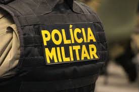

Futuro Profissional
Eu tenho o sonho de seguir a carreira de policial militar, um campo que exige coragem, disciplina e dedicação. Acredito que posso fazer a diferença na sociedade ao ajudar a manter a ordem, proteger as pessoas e atuar em momentos de crise.

A carreira de policial militar é desafiadora, mas gratificante. A rotina envolve patrulhamento, atendimento a emergências, investigação de crimes, e manutenção da ordem pública. Para alcançar esse objetivo, busco sempre me aprimorar fisicamente e mentalmente, além de estudar as técnicas e conhecimentos necessários para ser um bom profissional dessa área.